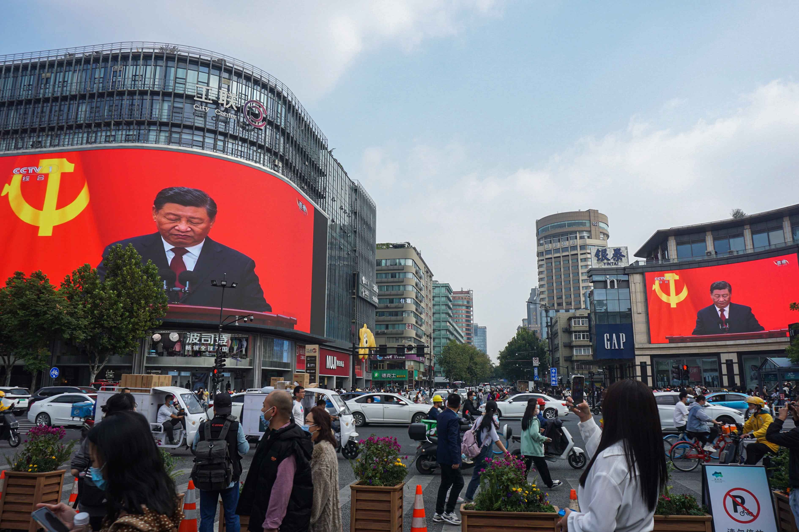
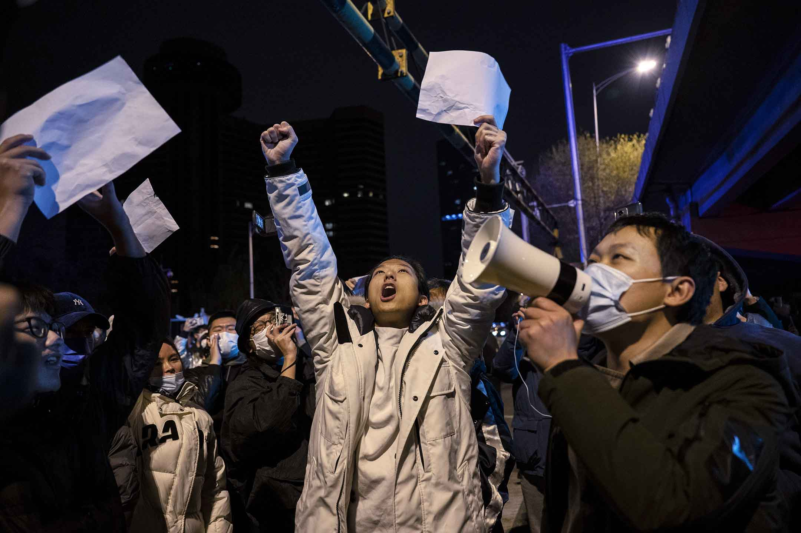
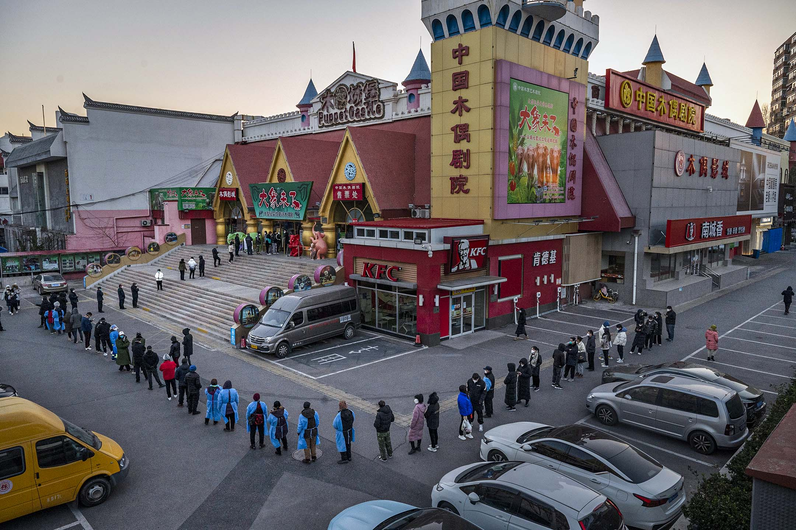
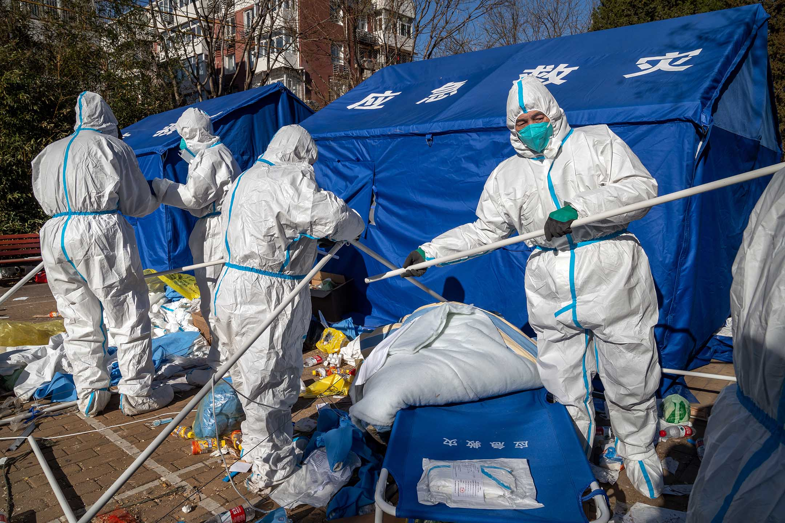

不妥協者會妥協嗎？習時代的社會矛盾會走向何方？
Table of Contents
剛剛發生的抗議運動，會在歷史上留下什麼浪花？
Figure 1: 2022年12月1日，北京，一名身穿防護衣的工作人員爬上被封鎖的社區外的一棵樹。圖：Bloomberg via Getty Images
楊山
刊登於 2022-12-05
在 一個週末高密度全中國各地開花的舉白紙抗議運動之後，素來以不妥協的風格著稱的習近平似乎決定向抗議者們妥協了。12月2日，據《南華早報》報導稱，習在 之前一天會見到訪北京的歐洲理事會主席米歇爾（Charles Michel）時，曾表示抗議者主要是學生，是因為他們在三年疫情後感到「沮喪」（frustrated）所致。據《南早》援引歐洲官員的描述，習還表示 奧密克戎變種致病性較低，可以因此採取更加放鬆的防疫策略了。
也就是在這兩天前後，中國大陸多座城市採取了遠較先前「清零」為鬆弛的防疫政策：廣州快速解封了已經圍封差不多一個月的海珠區，深圳停止了「常態化 核酸」（要求市民按照要求在進出任何公共場所和交通工具時都要按照疫情嚴重程度出示48小時或24小時內的核酸陰性證明。這是深圳在全國範圍內率先提出的 政策，一度引以為傲），北京則在全市範圍內大規模減少了核酸檢測點，並指乘坐交通工具不再需要短期內的核酸陰性證明。
與之前這些在危機中的應對相比，面對新近的抗議運動時，習似乎一下子就選擇了部分滿足抗議者的要求，這在他的執政經歷中，是非常少見的主動「退讓」。
在2019年香港示威中，習近平曾經在很長一段時間內既不做出妥協，也不升級至內地出手。這種沉默事實上促使了反修例運動的目標逐漸升級，強度逐漸 提高。而在2022年初的上海疫情中，他最終選擇了用漫長的數個月時間封鎖上海以徹底「清零」的不妥協手法。與之前這些在危機中的應對相比，面對新近的抗 議運動時，習似乎一下子就選擇了部分滿足抗議者的要求，這在他的執政經歷中，是非常少見的主動「退讓」。
畢竟，習近平在三年的防疫中一直將動態清零視為中國模式要優越於西方模式的重要證據，也把抗擊疫情作為他個人執政能力的重大成就。這意味着，無論表 面上如何解釋，對現任的最高領導人來說，走出動態清零都會是巨大的恥辱。但看起來，他正不可避免地在向這個方向邁出第一步。這當然是各地民衆舉起白紙上街 抗議所帶來的非常巨大的變化。
然而，這一變化能夠持續嗎？時隔一週，看起來這場社會運動的動能正在消退，先前被外媒高光關注的政治訴求， 也似乎回到了反對苛刻防疫政策的經濟和社會訴求上。嘲諷者認為，抗議人群看到胡蘿蔔就回家休息，就算大棒打到頭上也無所謂了。倒也確實，有許多樂觀者看到 防疫政策鬆動的跡象，認為抗議已經達到了訴求和目的。這也使得運動似乎在中國內外形成了巨大的反差-–—海外中國社群仍在各地組織抗議活動，而國內的、年輕 人為主的抗議活動已經在政府小範圍放開管控，在維穩系統全面啓動之後有所沉寂-–—過去的這個週末沒有出現顯著的群體性事件。在廣州等地，剛剛過去的週末有 小規模的逮捕行動，而網民也開始關注一些被逮捕但仍未釋放，或「消失」了數日的示威者。
換句話說，剛剛發生的抗議運動，是否沒有像很多人想象的那樣具有標誌性意義？又是否不會再在歷史上留下什麼浪花？

Figure 2: 2022年10月23日，杭州，人們經過一個十字路口，巨大的屏幕播放習近平在共產黨第二十次全國代表大會閉幕式上的講話。
新時代社會矛盾的成型
也許現在給出結論為時尚早。但筆者傾向於認為，在這次運動前後，中國不同社會團體的分化和動員變得更加明顯了。
也許現在給出結論為時尚早。但筆者傾向於認為，舉白紙抗議的這場運動，是習時代中國社會變化中的一個分水嶺。在這次運動前後，中國不同社會團體的分化和動員變得更加明顯了。
大學生對運動的普遍參與，其實足堪震驚。雖然此次抗議運動開始時經由廣州城中村和鄭州富士康的工人抗議醞釀，再經烏魯木齊和北京等地的小區業主抗爭 提速，但真正形成全國關注的，是烏魯木齊遊行次日從南京傳媒學院開始的學生「舉白紙」默站。這場抗議迅速傳遍了中國互聯網，刺激了當晚上海烏魯木齊中路的 抗議遊行。次日，清華大學學生在學校內的聚集抗議和當晚北京亮馬橋的集會，又在首都複製了上海發生的一切。
為何學生站出來如此具有指標性意義？畢竟，出生於2000年前後的這一代年輕人，其記事開始，中國就已經擺脫了原有的大範圍貧窮的狀態。在他們成年 的過程中，習近平時代的「四個自信」和「中國夢」敘事開始佔據輿論場。按道理，他們應該是最為「粉紅」，最認同中國的大國地位的一代青年。
但這恰恰能夠解釋學生世代的抗議心態：相比先前的世代，正在上大學的一代中國青年的絕望程度是更深的：過去三年的「動態清零」的疫政體制下，幾乎所 有大學生都要面對頻繁的封校、管控、隔離；大量課堂時間變成了對着屏幕的網課；寒暑假回鄉團聚/返校開課的正常流動處處受限，屢屢變化；正常的出國交換/ 旅行/校外實習也往往被疫政體制嚴重耽誤。相比社會中的其他群體，大學生完全可以說是最被疫政體制犧牲的一群人，清華大學作為中國最具特權的高等院校之 一，其學生反而能夠形成數百人的校內抗議，足以證明這種被忽視、被犧牲的感受，甚至幾乎是不分出身階級的。
另一群遭到疫政體制衝擊的是沒有城市中固定戶口身份的平民-–—比如在廣州城中村中的租戶、外來打工群體和新「入城」的說普通話的城市年輕白領。這些 群體沒有足夠的儲蓄，以零工經濟為主，任何封控、管制都足以讓他們「手停口停」。也正是在這些地方，這次爆發了更高烈度的對抗：富士康的工人抗議和廣州城 中村租客的抗議雖然沒有更激進的口號，卻都和警察與維穩機器爆發了正面衝突，甚至多次讓政府一方動用了催淚瓦斯。這群人在疫症體制裏，也是僅次於學生的 「被犧牲者」。
反過來，幾周以來，有不少城市的市民以一種非常「本土主義」的方式質疑、反對乃至攻擊抗議運動。比如，在廣州出現了海珠廣場的抗議活動之後，很多廣 州市民的反應是認為抗議者「是外地人」，「廣東話說得不好」，「肯定是港獨分子煽動」。而在成都，不少市民批評抗議者「普通話有港台口音」，「不是成都 人」。
學生、打工者、外來人和本地市民的對立，也許在2017年的「北京切除」中就已經開始凸顯。但是，2022年底的這場抗議運動，以憤怒/滿足、抗議/反抗議的政治表達的方式，更深地凸顯出兩個群體的深層次結構矛盾。

Figure 3: 2022年11月28日，北京，示威者在抗議中國嚴格的清零措施時高喊口號。
2012年到2017年的習近平第一個任期中，中國正面對着一場潛在的社會經濟危機-–—房地產的過分金融化使得泡沫爆破的風險企高，蓬勃的互聯網創 業熱潮正在積聚一批新的巨頭和壟斷企業，大都市的擴展使得種種社會矛盾有所激化，社會競爭的激烈使得年輕人感到負擔加重……在第二個任期內，習出台了一系 列政策來應對這些問題：他推出「房子是住的不是炒的」，用各種方式壓抑房價上漲；他打擊互聯網巨頭以「馴服」這一潛在的政商挑戰；他通過清退運動和雄安新 區建設試圖克服「大城市病」；他還一口氣幾乎「消滅」了課外補習，以為學生「減負」。
但如果我們仔細看這些政策方便了誰又損害了誰的話，就會發現，城市中心區擁有物業的本地戶口居民，尤其是體制內居民幾乎可以說是習時代各種「改革」 的受益者-–—打壓房價最先影響的是供求錯配的城郊地區，而各大城市中心區的房價跌幅極為有限甚至還仍然時有上升；互聯網和新興產業的影響力被削弱的同時， 國有企業和事業單位的重要性愈發增強，而這些「編制內」的就業，往往都是城市中的「本地人」有足夠的人脈網絡和家族關係才能參與；城市中打工者租住的空間 被清退，使得城中心的地租和生活成本更高，也使得外來人更難在大城市中覓得一席之地；而取消補習，事實上使得優質教育資源變得更為稀缺，成本更加高昂。有 了這一切，我們就不難理解，為什麼在最近的這波抗議中，不少大學生和打工人群如此難以忍耐封控，而許多「本地人」市民又如此鄙夷和反對抗爭。
更甚的是，儘管這些「城市包租有產者」並沒有主動構成集體的政治聲音，清零疫政卻幾乎是為了他們的利益而打造-–—這群人有着最穩定的收入，生活的地 方也有着更好的配套和服務設施。同樣的清零政策對打工者來說可能是致命的，但對體制內城市有產者來說卻僅僅是「短時間的小困難」罷了。
代際和性別矛盾也明顯隨着疫政在中國社會中擴大了。就筆者所見，就算是城市體制內有產者的子女，在網絡上表達對清零政策的不滿時，也更多站到了他們 父母一代的對立面上。這一趨勢在未來會繼續擴大，原因在於，習時代的種種「改革」，相比觸動既得利益，事實上更減少了年輕一代獨立積累財富或社會資本的通 道，新一代年輕人更依附於年長一代。也許有人會認為，依賴意味着服從，但香港的例子恰恰說明，子女經濟上更無法超越長輩一代的社會中，社會運動也依舊會沿 着代際邊界產生。
在中國社會的傳統男權結構中，這一切的壓力的最大承擔者將是年輕的女性-–—無論是人口壓力、社會生育壓力，還是家庭中的經濟壓力，最後都轉嫁給了傳統上最具弱勢地位的人群-–—女性和少數民族身上。未來的某種抗爭的「聯合體」，正在沿着這幾條線索，隨着這次抗議而慢慢成型。
也許可以預測，在接下來的「新時代」中，中國社會中的主要保守主義力量，和更多感到被壓迫被剝奪的群體，基本都已經在這次的抗議運動中出現併成型， 並且已經初步動員起來。放開管控或不放開管控，並不會對這一矛盾的結構構成任何改變-–—因為這一矛盾已經在疫情前的種種政策中確定了方向。苛刻的疫政只不 過是繼續放大了衝突。矛盾本身仍然會持續爆發，衝突也始終會指向習時代的基本政治結構。反過來，這已經意味着，想要在政治上對這兩個群體「既要也要」地分 別加以籠絡和安撫，已經變得不可能了。

Figure 4: 2022年12月1日，北京，人們排隊接種2019冠狀病毒疫苗。
解封與放開的政治劇場
筆者認為，這只是暫時的危機應對，對習來說，幾乎不存在減少矛盾或避免下一場危機的路線。
如今，隨着名義上的「解封」，剛剛獲得第三個任期的習近平看似正在走出抗議帶來的危機。但筆者認為，這只是暫時的危機應對，對習來說，幾乎不存在減少矛盾或避免下一場危機的路線。
誠然，在這次抗議之後，中國的維穩體制必然會進一步加強：對「翻牆」的處罰和控制會更加嚴格，對青年人的監控會更加密集，對公共場所的管制會更加強 力，對參加過遊行和抗議的人的「秋後算賬」也會一波接着一波。但是，正如這次遊行能夠爆發所揭示的：當社會矛盾足夠積蓄之後，再大規模的監控都無法阻止人 們自發宣泄憤怒和表達訴求。只要無法在一開始阻止社會運動的擴大，民衆所產生的動能就將會很快蔓延超過管制系統的承壓能力。也就是說，更強力的維穩只是會 提高社會運動的爆發門檻，拖延爆發的時間，但並不會阻止它的爆發。
反過來，加強對社會的管控，同樣也可能加速矛盾的激化和社會不滿的爆發。正如這次的舉白紙抗議運動源於社會全面的封控管理一樣，社會管制本身也帶有雙刃劍的效果。
但是，我們也很難想象習近平政府會在此之後對行政和管治模式有任何的改良方案。正如王岐山數年前推崇過並在黨內掀起閱讀風潮的19世紀法國社會觀察 家托克維爾（Alexis de Tocqueville）在《舊制度與大革命》中給出的論斷：「對於一個壞政府來說，最危險的時刻通常就是它開始改革的時刻」，在長時間的壓抑和強制之 後，一旦開始出現鬆動和變化，原先的社會基礎和民衆的忍耐便可能很快崩潰，人們將發現「處境越好就越覺得無法忍受（沒有變好的部分）」。這是阻止整個體制 改革，並促使他們寧可把螺絲擰得更緊也不願意放松管制的重要原因之一。
同樣的道理其實適用於疫政的「開放」。筆者遠遠不如很多人那樣對「放鬆管控」感到樂觀。首先的理由是，許多人期待的「中間路線」-–—即像新加坡那樣 一面控制感染速率，一面加強疫苗接種，一面按部就班慢慢放開-–—幾乎不可能出現在習時代的中國。這是因為，「中間路線」需要的是政府和民間的良好溝通，足 夠的宣傳科普，以及民衆的高度配合。在中國，疫政三年已經制造出了極為疲憊的基層政府和管治團隊，以及更為疲憊不堪的，精神高度緊張的民衆。然而政府和民 衆的溝通效率，如遊行所揭示的，已經每況愈下。我們很難想象在這種千瘡百孔的社會協調狀態下，習近平政府還能從容不迫地推出一種「中間路線」實現有序開 放。此外，層層加碼的防疫體制，一旦轉向放開，更大的可能性是快速潰退，而非有序撤退。

Figure 5: 2022年12月1日，北京，身穿防護服的工作人員拆除被封鎖的社區外的臨時避難所。
更可能的局面是，中國從疫政模式「開放」的過程將是兩種模式的混合體。一種是繼續先前的動態清零模式，很多地方在意識到自己無力應對大規模感染後， 可能將持續核酸、清零、強制隔離，尤其警惕那些「放開」了的城市。另一種則是「躺平」模式，就像廣州和重慶那樣，雖然疫苗接種率也沒有提高，也沒有有序的 疫苗接種計劃，但是迫於疫情和政策執行的壓力，必須要開始放鬆。這很有可能是未來一年中國社會面臨的雙重困境-–—又不自由，又亂成一團。
在這種混亂局面中，習時代的官僚和忠臣們將會比先前的五年有更多機會實現自己的自主發揮。截至目前，習仍然沒有對國內作任何有關疫政的表態和發言。 這顯示出他似乎希望無論最後是放開還是堅持清零，責任都能不要完全由自己來獨自承擔。這就意味着地方大員們既多了更多的「背鍋」責任，也就相應有了更靈活 的施政空間。於是我們已經看到，在廣州重慶等地解除封控的同時，杭州上海等地正在管制得更加嚴格。2020年初那種地方上各自為戰的局面，可能以更大規 模、更長時間的方式再次上演一遍。習時代的下級官員的新派系的形成和衝突，也許也會在其中浮出水面。
我們完全可以想象的是，所謂「放開」只是很多未來的艱難的開始。之所以會有清零和放開之爭，就已經說明了現有的執政模式在信息傳導、決策效率、責任 分配上出現了一連串的問題。而不要忘記：就算是2022年的嚴格清零，中國經濟也仍舊保持着正增長。現有的社會矛盾，在更大的經濟困難面前還僅僅是剛剛開 始。在未來，隨着中美經濟競爭的加劇和可能產生的其他地緣政治震盪，中國國內已經成型的社會矛盾和經濟衝突，必然會讓社會運動變得更加頻繁-–—除非矛盾的 其中一方取得了決定性的勝利，讓另外一方徹底退出歷史舞台。
本刊載內容版權為端傳媒或相關單位所有，未經端傳媒編輯部授權，請勿轉載或複製，否則即為侵權。